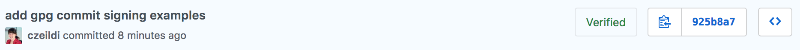

It is good practice to sign your commits so that your commits can be verified as certainly made by you and not by someone impersonating you.

One technology to enable this is GPG, which has an R wrapper written by Jeroen Ooms. The current package provides helper functions and aims to ease the process as much as possible.
Having verified commits has two components:
If you are interested in the background, general info on GPG is highly recommended.
brew install gnupg (check if installed with gpg --version)apt-get install gnupg (check if installed with gpg --version)devtools::install_github("ropenscilabs/ropsec")
Run the following command once in any working directory to generate a new key and set it to sign all future commits in all repositories.
sign_commits_with_key(name = "John Doe", email = "johndoe@example.com")#> `John Doe` (as provided) and
#> `johndoe@example.com` (as provided)
#> will be used to generate a new gpg key.
#> Please enter password for new gpg key: ********
#> Do you want to sign all future commits with `ABCDEFGHIJKLMNOP` in all repositories?
#>
#> 1: Yes
#> 2: Not now
#> 3: Absolutely not
#> Selection: 1
#> [1] "ABCDEFGHIJKLMNOP"Next step: upload your public key to GitHub/Gitlab/etc.
One common use-case is to have a personal and a work email as well and you use git with both of them. At the first time you want to use them, generate a key and set to use it in the repository.
Run the following in a personal git repository:
sign_commits_with_key(name = "John Doe", email = "jd@personal.com", global = FALSE)In a work-related git repository:
sign_commits_with_key(name = "John Doe", email = "jd@company.com", global = FALSE)Later, for convenience the appropriate key can be identified based on email as well or if the local git config is set you can even rely on that.
In another work-related repository:
sign_commits_with_key(email = "jd@company.com", global = FALSE)In yet another work-related repository:
git config user.email jd@company.comsign_commits_with_key(global = FALSE)#> Existing key found: 1234561234561234.
#> Corresponding email: jd@company.com (based on local git config).
#>
#> Do you want to sign all future commits with `1234561234561234` in this repository?
#>
#> 1: Yes
#> 2: Absolutely not
#> 3: Not now
#>
#> Selection: 1
#> [1] "1234561234561234"You may choose to set one of them globally which thus will be the default key to use in a repository where the repository level configs are not set to a different value.
(possibly generated with gpg --full-generate-key or with this package previously)
sign_commits_with_key(key = "ABCDEFGHIJKLMNOP")sign_commits_with_key(name = "John Doe")#> Existing key found: ABCDEFGHIJKLMNOP.
#> Corresponding email: johndoe@example.com (based on local git config).
#>
#> Do you want to sign all future commits with `ABCDEFGHIJKLMNOP` in all repositories?
#> ...sign_commits_with_key(email = "johndoe@example.com")To upload to GitHub without leaving your R session you need the following:
write:gpg_key scope enabled. You can grant access to tokens here.gh_store_key(key, token)You can use any service (GitHub, Gitlab etc) which supports GPG by manually adding your public GPG key which you can get by